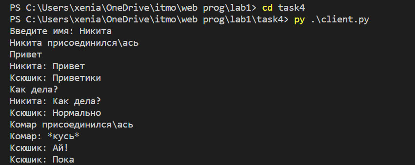

Задание 4
Реализовать двухпользовательский или многопользовательский чат. Реализация многопользовательского часа позволяет получить максимальное количество баллов. Обязательно использовать библиотеку threading.
client.py
import socket
from threading import Thread
def receive():
while True:
try:
msg = client.recv(1024).decode('utf-8')
print(msg)
except:
break
def respond():
while True:
client.send((input()).encode('utf-8'))
client = socket.socket(socket.AF_INET, socket.SOCK_STREAM)
client_adress = ('localhost', 7777)
client.connect(client_adress)
username = input('Введите имя: ')
rec_thread = Thread(target=receive)
rec_thread.start()
client.send(username.encode('utf-8'))
respond()
server.py
import socket
from threading import Thread
class User:
def __init__(self, connection):
self.connection = connection
self.name = ''
self.ready = False
def c_listen(user):
while True:
data = user.connection.recv(1024)
if not data:
break
msg = data.decode('utf-8')
if user.ready:
send_users(f'{user.name}: {msg}')
else:
user.name = msg
user.ready = True
send_users(f'{user.name} присоединился\ась')
users.remove(user)
user.connection.close()
send_users(f'{user.name} покинул(а) чат')
def send_users(msg):
for user in users:
if user.ready:
user.connection.send(msg.encode('utf-8'))
users = []
srv = socket.socket(socket.AF_INET, socket.SOCK_STREAM)
server_adress = ('localhost', 7777)
srv.bind(server_adress)
srv.listen(1)
def connect():
while True:
connect, _ = srv.accept()
user = User(connect)
users.append(user)
client_thread = Thread(target=c_listen, args=[user])
client_thread.start()
connect()
